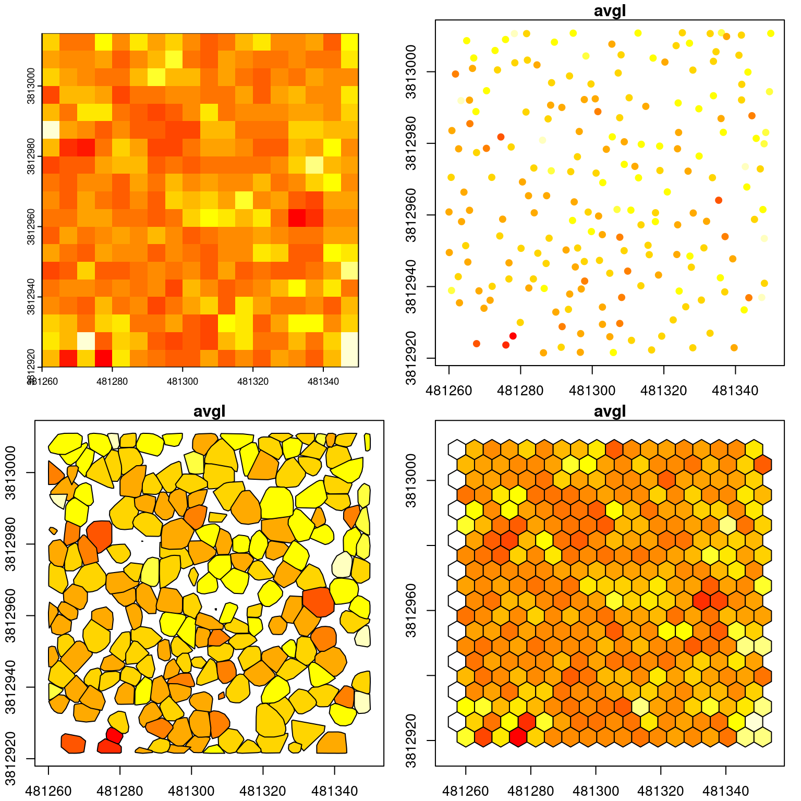

The goal of this section is to describe the notion of metrics in lidR. Analyses of point cloud data are often based on metrics calculations. Metrics are scalar summaries of point distributions that can be computed using varying neighborhood definitions and varying reference locations. For example, when reference locations are regularly distributed on a grid and the neigbourhood is a square centered on those locations, we typically use an area-based-approach (ABA) that consists of computing metrics for pixels. Maximum height of points inside a 20 x 20 m grid cell (in this case of pixel) is an example of an ABA metric. This however is not the only option, and other definitions can enable other analyses and applications.
The standard deviation of point heights within a single tree crown is an example of a metric calculated at the tree level. The average distance between a point and its k-nearest neighbours is a metrics calculated at the point level. More complex metrics can even be imagined like the average distance between first and last returns within a pixel or within a tree. In the end, regardless of the scale at which metrics are calculated, they serve as proxies of forest inventory attributes or can be used as independent variables in predictive models.
The notion of metrics is at the core of the lidR package, which enables the computation of standard or custom user-defined metrics at varying levels of regularization:
In the majority of cases, derived metrics are calculated based on point heights (Z coordinate) at the cell level since they are the most useful predictors for developing forest inventory attribute models. From a strictly technical point of view however, any point cloud attribute can be used to calculate metrics (e.g. mean Intensity, maximum ScanAngleRank), or several attributes can be used simultaneously (e.g. proportion of first returns above mean Z, standard deviation of Intensity of second returns only).
A metric is simply a number derived from the attributes of a subset of points. Thus the potential number of metrics that can be calculated is very large and only limited by user’s imagination. There are however published studies that discuss the usefulness of different metrics for modelling and standard sets of metrics exist.
8.1 The basics
While there are some differences between functions dedicated to metric computations the basic idea is the same for all of them. In addition to the input point cloud, the user needs to provide a formula to calculate the metric(s) of interest. For example, the average height of points for the point cloud, for each pixel, for each tree crown, for each voxel or for each hexagonal cell can be be calculated using mean(Z).
All the functions work the same way but the output format depends on the regularization level. In each case, outputs will be a different class (i.e. a list, a spatial raster, a spatial vector or a data.frame) to take advantage of the best storage method, but the same two metrics will be calculated for every unit of analysis. In the following example we are computing average intensity at different levels of regularization
LASfile <-system.file("extdata", "MixedConifer.laz", package ="lidR")las <-readLAS(LASfile)m <-~list(avgI =mean(Intensity))a <-pixel_metrics(las, m, res =5)b <-crown_metrics(las, m, geom ="point")c <-crown_metrics(las, m, geom ="convex")d <-hexagon_metrics(las, m, area =25)par(mfrow=c(2,2))plot(a, col =heat.colors(15), legend =FALSE)plot(b["avgI"], pal = heat.colors, pch =19, cex =1, axes =TRUE, key.pos =NULL, reset =FALSE)plot(c["avgI"], pal = heat.colors, axes =TRUE, key.pos =NULL, reset =FALSE)plot(d["avgI"], pal = heat.colors, axes =TRUE, key.pos =NULL, reset =FALSE)

8.2 User-defined metrics
In the example above only a single metric is calculated - the mean intensity of the points. Calculations can however be easily extended to any number of user-defined metrics. To do this, users can design custom functions. The function can contain any number of metrics, but needs to return a labeled list. For example, to calculate the mean of elevation, and the standard deviation and mean of intensity, the following function can be used:
f <-function(z, i) {list(mean =mean(z), sd =sd(i),imean =mean(i))}
While any metric can be computed at any level of regularization, it’s important to recognize that they may not all be meaningful. For example, the average elevation of points has a meaning at the pixel level or at the tree level but not at the voxel level. Indeed at the voxel level it corresponds to the average elevation of the points within the voxel i.e. more or less the Z coordinate of the voxel. This in the end needs to be considered by the user. Perhaps asking “does this metric make sense?” is a good place to start!
8.3 Pre-defined metrics
The most commonly used metrics are already predefined in lidR - the stdmetrics*() group of functions contain metrics that summarize the vertical distribution of points, their intensities, and return structure.
The complete list of all metrics can be found in the lidR wiki page and can be use that way:
In some cases, users may want to calculate metrics from lidar data that are complex or less intuitive to code. In these examples it makes sense to use functions that are already available from other packages. We present 2 pertinent examples below that were brought to our attention by lidR users.
L-moments
L-moments are linear combinations of ordered data values. In the context of lidar data this relates to elevation and intensity. The ratios of L-moments are comparable to variance, skewness and kurtosis, and have been shown valuable for a number of lidar-derived attribute modeling studies (eg. Valbuena et al. 2017, Adnan et al. 2021) as well as being standard metrics produced in FUSION lidar processing software.
In order to calculate these metrics we can leverage the lmom package which provides functions to calculate L-moments and associated ratios. In the example we use the samlmu() function.
We see that we can supply the func argument in pixel_metrics() with a function from an external package. This allows us to be fairly flexible with the metrics we are able to calculate without needing to introduce dependencies within the lidR package.
Fractal dimensions
Fractal dimensions are another statistical description that is showing promise within lidar and forestry related research (eg. Saarinen et al., 2021). The use of fractal dimensions seeks to help understand the relationship between structural complexity and stem/crown size and shape.
The calculation of fractal dimensions — similarly to L-moments — can be tricky to implement efficiently, and would add an additional dependency to lidR’s growing list. To avoid lidR needing to depend on external packages, we can leverage them (in this case Rdimtools) to calculate fractal dimensions within a pixel_metrics() example.
First, we can create a user-defined function that leverages the est.boxcount() function within Rdimtools. This allows us to define the variables we want the function to utilize within pixel_metrics()
#create user-defined functionfd =function(X,Y,Z) { M =cbind(X,Y,Z)est.boxcount(M)$estdim}
Now the we have defined the fd function, which calculates our fractal dimensions using XYZ values, we can apply it on our lidar data and create output rasters.
There are obviously many potential calculations to apply and statistics to derive from lidar data. The ability to include third party functions like the examples listed above within metric calculations makes lidR valuable and flexible from a research standpoint.